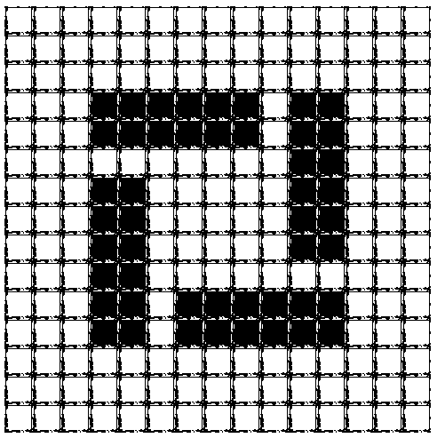

Za twórcę automatów komórkowych uważa się Janosa von Neumanna, Węgra pracującego w Princeton, autora ''Mathematical Foundations of Quantum Mechanics''. Von Neumann znany jest także ekonomistom z prac nad teorią Keynesa. W końcu lat 40-tych zajmował się modelem ''pierwotnej zupy'', cieczy z której miało powstać życie. Jak wiadomo, wprowadził do swego modelu dyskretny czas i przestrzeń z inspiracji Stanisława Ulama, lwowskiego matematyka, który przebywał wtedy w Los Alamos. Ulam jest też autorem określenia automatów komórkowych jako ''fizyki urojonej'' - nazwa jest parafrazą pogardliwego kiedyś określenia liczby i.

Obraz 1. Przykład autmomatu komórkowego
Najsłynniejszym chyba automatem jest Life autorstwa angielskiego matematyka Johna H. Conwaya. Ten automat miał kiedyś swój klub fanów wśród naukowców i studentów USA. W konkursie na samodtwarzającą się konfigurację komórek zwyciężyła w listopadzie 1970 grupa z MIT, publikując ''działo szybowcowe'' i zgarniając nagrodę w wysokości 50 dolarów. W Life można widzieć model żyjącego środowiska; w użyciu jest terminologia ''żywych'' i ''martwych'' komórek. Ale jest to automat uniwersalny, czyli zdolny do każdej operacji logicznej. Można w jego ramach otrzymać na przykład kolejne rozwiązania wielkiego twierdzenia Fermata.
Obraz 2. Automat komórkowy przedstawiający grę w życie
Automaty komórkowe weszły do bibliotek fizyków na początku lat 80-tych. Jednym z głównych popularyzatorów tej idei był Stephen Wolfram, znany jako twórca pakietu Mathematica, wtedy profesor fizyki w Princeton, obecnie dyrektor Wolfram Research, Inc. Wolfram próbował też sklasyfikować automaty komórkowe - gdyby się ten zamiar powiódł, można by mówić o klasyfikacji wszystkich dyskretnych procesów dynamicznych.
Automaty komórkowe nie spełniły wszystkich nadziei, jakie w nich pokładano. Nie udało się ich na przykład przetłumaczyć na równania różniczkowe. Ich dyskretny charakter jest nie do przyjęcia dla fizyków, którzy chcieliby symulować ciągłe procesy dynamiczne. Z kolei idealny automat do testowania twierdzeń probabilistycznych musiałby mieć nieskończony rozmiar sieci, czego nie chcą zaakceptować informatycy. Mimo to lista zastosowań automatów komórkowych w technice ciągle rośnie, a niektóre idee fizyki zostały przeniesione do innych nauk za pośrednictwem automatów. Przykładem może być model Reggego quasi-klasycznych cząstek, modny na początku lat 70-tych, a obecnie testowany metodami Monte Carlo pod nazwą directed percolation*.
* Powyższy wstęp został zaczerpnięty ze skryptu "Automaty komórkowe" autorstwa prof. dr hab Krzysztofa Kułakowskiego.